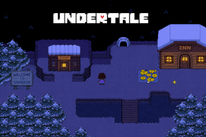

O que mais me surpreende é que esse jogo consegue ser extremamente bem feito, mesmo sendo um jogo independente, feito por 1 pessoa, ele consegue combinar mecânicas de jogo incríveis, bosses desafiadores e o melhor de tudo, uma história sensacional com uma mensagem importante, porém eu não vou falar para vocês, vocês vão ter que ver para saber!
Canal do Toby Fox: Canal do Toby Fox
Acompanhe a história de Undertale através desse link: História de Undertale
Voltar para o Início: Lobby
Voltar para a lista de games favoritos: Lista de Jogos Favoritos